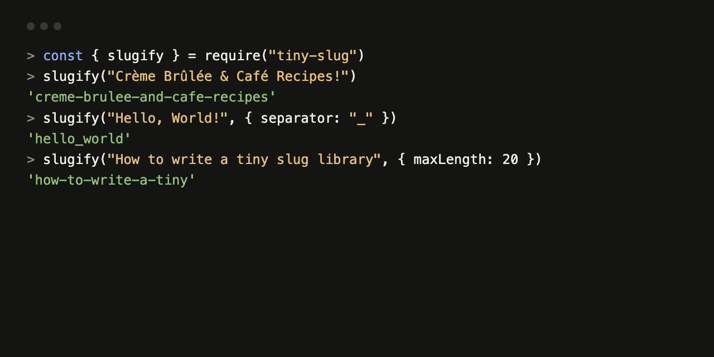

tiny-slug
A URL slug generator for Node.js: one 16-line function with no dependencies that turns any string into a lowercase ASCII slug.

Quickstart
npm install github:example-dev/tiny-slugconst { slugify } = require("tiny-slug");
slugify("Crème Brûlée & Café Recipes!"); // "creme-brulee-and-cafe-recipes"
slugify("Hello, World!", { separator: "_" }); // "hello_world"Proof
- Unit tests: 5 of 5 pass (
npm test). - Edge-case eval: 9 of 13 pass (
node evals/run.js), measured 2026-10-17 on Node.js v22.
Limitations
ß,øand similar letters become separators; non-Latin scripts give an empty string.- Separators with regex characters such as
.give wrong output. maxLengthdrops one word too many when the cut lands exactly on a word boundary.
MIT licensed. Read the full README, including the comparison with other slug libraries and the FAQ.